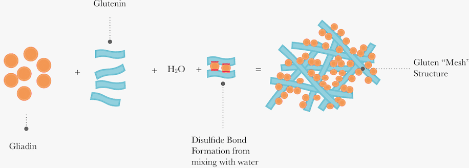

Glutine
Gluten (from Latin gluten, "glue") is a group of proteins, called prolamins and glutelins, which occur with starch in the endosperm of various cereal grains. This protein complex comprises 75–85% of the total protein in bread wheat. It is found in related wheat species and hybrids, (such as spelt, khorasan, emmer, einkorn, and triticale), barley, rye, and oats,[4] as well as products derived from these grains, such as breads and malts.
Glutens, especially Triticeae glutens, have unique viscoelastic and adhesive properties, which give dough its elasticity, helping it rise and keep its shape and often leaving the final product with a chewy texture. These properties and its relative low cost are the reasons why gluten is so widely demanded by the food industry and for non-food uses.
Prolamins in wheat are called gliadins; in barley, hordeins; in rye, secalins; and in oats, avenins. These protein classes are collectively referred to as gluten. Wheat glutelins are called glutenin. True gluten is limited to these four grains. (The storage proteins in maize and rice are sometimes called glutens, but they differ from true gluten.).
Gluten can trigger adverse inflammatory, immunological and autoimmune reactions in some people. Gluten can produce a broad spectrum of gluten-related disorders, including coeliac disease in 1–2% of the general population, non-coeliac gluten sensitivity in 6–10% of the general population, dermatitis herpetiformis, gluten ataxia and other neurological disorders. These disorders are treated by a gluten-free diet.
Structure
At the molecular level, gluten is made up of two proteins called gliadin (gliadina) and glutenin (Glutenina) that are connected by disulfide bridges, created by way of mechanical stress in an aqueous environment. Gliadin usually folds to form a compact spherical shape, while glutenin often assumes a more elongated rope-like shape.
Coeliac disease
Coeliac disease or celiac disease is a long-term autoimmune disorder that primarily affects the small intestine. Classic symptoms include gastrointestinal problems such as chronic diarrhoea, abdominal distention, malabsorption, loss of appetite and among children failure to grow normally. This often begins between six months and two years of age. Non-classic symptoms are more common, especially in people older than two years. There may be mild or absent gastrointestinal symptoms, a wide number of symptoms involving any part of the body or no obvious symptoms. Coeliac disease was first described in childhood; however, it may develop at any age. It is associated with other autoimmune diseases, such as diabetes mellitus type 1 and thyroiditis, among others.
Coeliac disease is caused by a reaction to gluten, a group of various proteins found in wheat and in other grains such as barley and rye. Moderate quantities of oats, free of contamination with other gluten-containing grains, are usually tolerated. The occurrence of problems may depend on the variety of oat. It occurs in people who are genetically predisposed. Upon exposure to gluten, an abnormal immune response may lead to the production of several different autoantibodies that can affect a number of different organs. In the small bowel, this causes an inflammatory reaction and may produce shortening of the villi lining the small intestine (villous atrophy). This affects the absorption of nutrients, frequently leading to anaemia.
The term "coeliac" is from the Greek κοιλιακός (koiliakós, "abdominal") and was introduced in the 19th century in a translation of what is generally regarded as an Ancient Greek description of the disease by Aretaeus of Cappadocia.
Meccanismo
Why does Amy’s body react negatively to gluten? The immune system of people with celiac disease mistakenly identifies parts of gliadin and glutenin as foreign and destroys them. The immune system usually looks for “foreign” epitopes—parts of proteins that do not belong to our bodies. Once such epitopes are found, specialized cells from the immune system, called lymphocytes, destroy the foreign proteins.
Epitopes usually contain between eight and 11 amino acids. Normally during digestion, the digestive enzymes within the small intestine break up proteins into single amino acids and small chains of amino acids. This is necessary because the intestine can only absorb single amino acids or, at most, chains of three to four amino acids.
Somehow, these larger chains enter the cells lining the intestine, and one of them attaches to an enzyme inside the cells. In people with celiac disease, the complex of the chain of amino acids and enzyme sets off an immune reaction that attacks the complex and, at the same time, damages the intestinal cells.